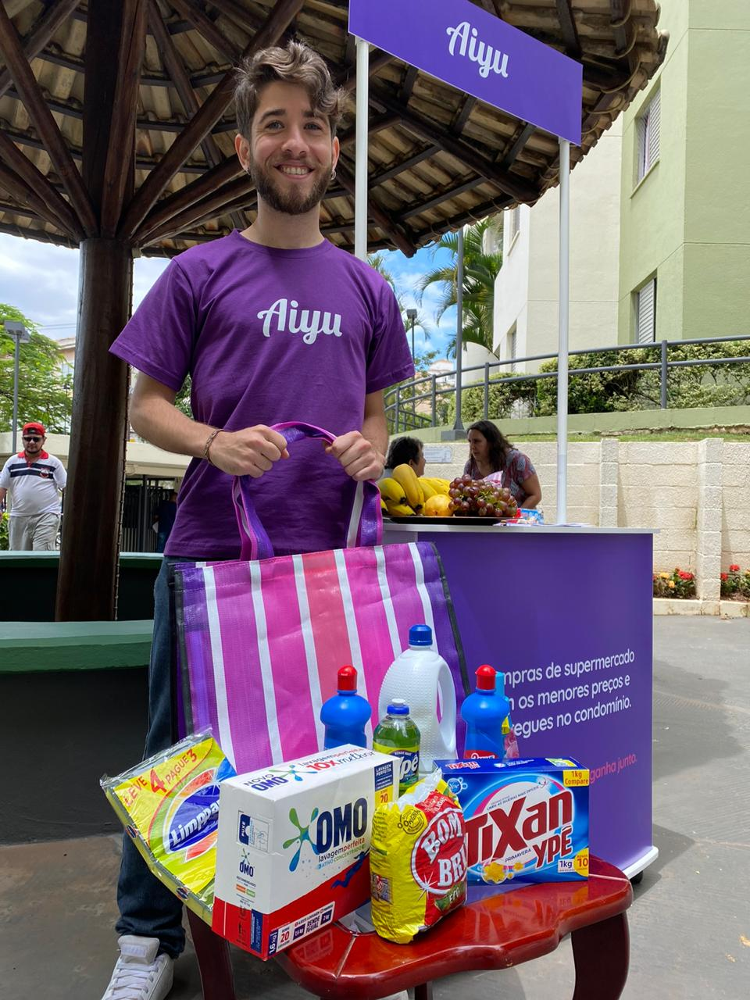

A door-to-door model, rebuilt for WhatsApp.
Favo, originally launched as Aiyu, reimagined the door-to-door sales model for the twenty-first century. Local entrepreneurs sold supermarket products to their neighbors through curated WhatsApp catalogs — orders collected through the day, fulfilled by a central hub overnight, delivered the next morning by the same network of resellers. The model worked: the company shipped 700,000 orders in its first year. Investment landed from Global Founders Capital and Elevar Equity.

I joined as Lead Designer between my freelance years and the consulting work that came after. The first six weeks were diagnostic — reading the existing Aiyu identity, watching the partner app in real hands, talking to the operations team about what the inherited internal tools couldn’t do.
Four work-streams emerged from that diagnosis: a rebrand, a redesign of the partner app, a public website, and a set of internal tools to replace the licensed software that wouldn’t integrate with the overnight-fulfillment pipeline. They ran in parallel for the rest of the year.